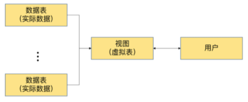

第14章_视图
讲师：尚硅谷-宋红康（江湖人称：康师傅）
1. 常见的数据库对象
| 对象 | 描述 |
|---|---|
| 表(TABLE) | 表是存储数据的逻辑单元，以行和列的形式存在，列就是字段，行就是记录 |
| 数据字典 | 就是系统表，存放数据库相关信息的表。系统表的数据通常由数据库系统维护，程序员通常不应该修改，只可查看 |
| 约束(CONSTRAINT) | 执行数据校验的规则，用于保证数据完整性的规则 |
| 视图(VIEW) | 一个或者多个数据表里的数据的逻辑显示，视图并不存储数据 |
| 索引(INDEX) | 用于提高查询性能，相当于书的目录 |
| 存储过程(PROCEDURE) | 用于完成一次完整的业务处理，没有返回值，但可通过传出参数将多个值传给调用环境 |
| 存储函数(FUNCTION) | 用于完成一次特定的计算，具有一个返回值 |
| 触发器(TRIGGER) | 相当于一个事件监听器，当数据库发生特定事件后，触发器被触发，完成相应的处理 |
2. 视图概述

2.1 为什么使用视图？
视图一方面可以帮我们使用表的一部分而不是所有的表，另一方面也可以针对不同的用户制定不同的查询视图。比如，针对一个公司的销售人员，我们只想给他看部分数据，而某些特殊的数据，比如采购的价格，则不会提供给他。再比如，人员薪酬是个敏感的字段，那么只给某个级别以上的人员开放，其他人的查询视图中则不提供这个字段。
刚才讲的只是视图的一个使用场景，实际上视图还有很多作用。最后，我们总结视图的优点。
2.2 视图的理解
-
视图是一种
虚拟表，本身是不具有数据的，占用很少的内存空间，它是 SQL 中的一个重要概念。 -
视图建立在已有表的基础上, 视图赖以建立的这些表称为基表。

-
视图的创建和删除只影响视图本身，不影响对应的基表。但是当对视图中的数据进行增加、删除和修改操作时，数据表中的数据会相应地发生变化，反之亦然。
-
向视图提供数据内容的语句为 SELECT 语句, 可以将视图理解为存储起来的 SELECT 语句
-
在数据库中，视图不会保存数据，数据真正保存在数据表中。当对视图中的数据进行增加、删除和修改操作时，数据表中的数据会相应地发生变化；反之亦然。
-
视图，是向用户提供基表数据的另一种表现形式。通常情况下，小型项目的数据库可以不使用视图，但是在大型项目中，以及数据表比较复杂的情况下，视图的价值就凸显出来了，它可以帮助我们把经常查询的结果集放到虚拟表中，提升使用效率。理解和使用起来都非常方便。
3. 创建视图
- 在 CREATE VIEW 语句中嵌入子查询
CREATE [OR REPLACE]
[ALGORITHM = {UNDEFINED | MERGE | TEMPTABLE}]
VIEW 视图名称 [(字段列表)]
AS 查询语句
[WITH [CASCADED|LOCAL] CHECK OPTION]
- 精简版
CREATE VIEW 视图名称
AS 查询语句
3.1 创建单表视图
举例：
CREATE VIEW empvu80
AS
SELECT employee_id, last_name, salary
FROM employees
WHERE department_id = 80;
查询视图：
SELECT *
FROM salvu80;

举例：
CREATE VIEW emp_year_salary (ename,year_salary)
AS
SELECT ename,salary*12*(1+IFNULL(commission_pct,0))
FROM t_employee;
举例：
CREATE VIEW salvu50
AS
SELECT employee_id ID_NUMBER, last_name NAME,salary*12 ANN_SALARY
FROM employees
WHERE department_id = 50;
说明1：实际上就是我们在 SQL 查询语句的基础上封装了视图 VIEW，这样就会基于 SQL 语句的结果集形成一张虚拟表。
说明2：在创建视图时，没有在视图名后面指定字段列表，则视图中字段列表默认和SELECT语句中的字段列表一致。如果SELECT语句中给字段取了别名，那么视图中的字段名和别名相同。
3.2 创建多表联合视图
举例：
CREATE VIEW empview
AS
SELECT employee_id emp_id,last_name NAME,department_name
FROM employees e,departments d
WHERE e.department_id = d.department_id;
CREATE VIEW emp_dept
AS
SELECT ename,dname
FROM t_employee LEFT JOIN t_department
ON t_employee.did = t_department.did;
CREATE VIEW dept_sum_vu
(name, minsal, maxsal, avgsal)
AS
SELECT d.department_name, MIN(e.salary), MAX(e.salary),AVG(e.salary)
FROM employees e, departments d
WHERE e.department_id = d.department_id
GROUP BY d.department_name;
- 利用视图对数据进行格式化
我们经常需要输出某个格式的内容，比如我们想输出员工姓名和对应的部门名，对应格式为 emp_name(department_name)，就可以使用视图来完成数据格式化的操作：
CREATE VIEW emp_depart
AS
SELECT CONCAT(last_name,'(',department_name,')') AS emp_dept
FROM employees e JOIN departments d
WHERE e.department_id = d.department_id
3.3 基于视图创建视图
当我们创建好一张视图之后，还可以在它的基础上继续创建视图。
举例：联合“emp_dept”视图和“emp_year_salary”视图查询员工姓名、部门名称、年薪信息创建 “emp_dept_ysalary”视图。
CREATE VIEW emp_dept_ysalary
AS
SELECT emp_dept.ename,dname,year_salary
FROM emp_dept INNER JOIN emp_year_salary
ON emp_dept.ename = emp_year_salary.ename;
4. 查看视图
语法1：查看数据库的表对象、视图对象
SHOW TABLES;
语法2：查看视图的结构
DESC / DESCRIBE 视图名称;
语法3：查看视图的属性信息
# 查看视图信息（显示数据表的存储引擎、版本、数据行数和数据大小等）
SHOW TABLE STATUS LIKE '视图名称'\G
执行结果显示，注释Comment为VIEW，说明该表为视图，其他的信息为NULL，说明这是一个虚表。
语法4：查看视图的详细定义信息
SHOW CREATE VIEW 视图名称;
5. 更新视图的数据
5.1 一般情况
MySQL支持使用INSERT、UPDATE和DELETE语句对视图中的数据进行插入、更新和删除操作。当视图中的数据发生变化时，数据表中的数据也会发生变化，反之亦然。
举例：UPDATE操作
mysql> SELECT ename,tel FROM emp_tel WHERE ename = '孙洪亮';
+---------+-------------+
| ename | tel |
+---------+-------------+
| 孙洪亮 | 13789098765 |
+---------+-------------+
1 row in set (0.01 sec)
mysql> UPDATE emp_tel SET tel = '13789091234' WHERE ename = '孙洪亮';
Query OK, 1 row affected (0.01 sec)
Rows matched: 1 Changed: 1 Warnings: 0
mysql> SELECT ename,tel FROM emp_tel WHERE ename = '孙洪亮';
+---------+-------------+
| ename | tel |
+---------+-------------+
| 孙洪亮 | 13789091234 |
+---------+-------------+
1 row in set (0.00 sec)
mysql> SELECT ename,tel FROM t_employee WHERE ename = '孙洪亮';
+---------+-------------+
| ename | tel |
+---------+-------------+
| 孙洪亮 | 13789091234 |
+---------+-------------+
1 row in set (0.00 sec)
举例：DELETE操作
mysql> SELECT ename,tel FROM emp_tel WHERE ename = '孙洪亮';
+---------+-------------+
| ename | tel |
+---------+-------------+
| 孙洪亮 | 13789091234 |
+---------+-------------+
1 row in set (0.00 sec)
mysql> DELETE FROM emp_tel WHERE ename = '孙洪亮';
Query OK, 1 row affected (0.01 sec)
mysql> SELECT ename,tel FROM emp_tel WHERE ename = '孙洪亮';
Empty set (0.00 sec)
mysql> SELECT ename,tel FROM t_employee WHERE ename = '孙洪亮';
Empty set (0.00 sec)
5.2 不可更新的视图
要使视图可更新，视图中的行和底层基本表中的行之间必须存在一对一的关系。另外当视图定义出现如下情况时，视图不支持更新操作：
- 在定义视图的时候指定了“ALGORITHM = TEMPTABLE”，视图将不支持INSERT和DELETE操作；
- 视图中不包含基表中所有被定义为非空又未指定默认值的列，视图将不支持INSERT操作；
- 在定义视图的SELECT语句中使用了
JOIN联合查询，视图将不支持INSERT和DELETE操作； - 在定义视图的SELECT语句后的字段列表中使用了
数学表达式或子查询，视图将不支持INSERT，也不支持UPDATE使用了数学表达式、子查询的字段值； - 在定义视图的SELECT语句后的字段列表中使用
DISTINCT、聚合函数、GROUP BY、HAVING、UNION等，视图将不支持INSERT、UPDATE、DELETE； - 在定义视图的SELECT语句中包含了子查询，而子查询中引用了FROM后面的表，视图将不支持INSERT、UPDATE、DELETE；
- 视图定义基于一个
不可更新视图； - 常量视图。
举例：
mysql> CREATE OR REPLACE VIEW emp_dept
-> (ename,salary,birthday,tel,email,hiredate,dname)
-> AS SELECT ename,salary,birthday,tel,email,hiredate,dname
-> FROM t_employee INNER JOIN t_department
-> ON t_employee.did = t_department.did ;
Query OK, 0 rows affected (0.01 sec)
mysql> INSERT INTO emp_dept(ename,salary,birthday,tel,email,hiredate,dname)
-> VALUES('张三',15000,'1995-01-08','18201587896',
-> 'zs@atguigu.com','2022-02-14','新部门');
#ERROR 1393 (HY000): Can not modify more than one base table through a join view 'atguigu_chapter9.emp_dept'
从上面的SQL执行结果可以看出，在定义视图的SELECT语句中使用了JOIN联合查询，视图将不支持更新操作。
虽然可以更新视图数据，但总的来说，视图作为
虚拟表，主要用于方便查询，不建议更新视图的数据。对视图数据的更改，都是通过对实际数据表里数据的操作来完成的。
6. 修改、删除视图
6.1 修改视图
方式1：使用CREATE OR REPLACE VIEW 子句修改视图
CREATE OR REPLACE VIEW empvu80
(id_number, name, sal, department_id)
AS
SELECT employee_id, first_name || ' ' || last_name, salary, department_id
FROM employees
WHERE department_id = 80;
说明：CREATE VIEW 子句中各列的别名应和子查询中各列相对应。
方式2：ALTER VIEW
修改视图的语法是：
ALTER VIEW 视图名称
AS
查询语句
6.2 删除视图
-
删除视图只是删除视图的定义，并不会删除基表的数据。
-
删除视图的语法是：
mysql
DROP VIEW IF EXISTS 视图名称;
mysql
DROP VIEW IF EXISTS 视图名称1,视图名称2,视图名称3,...;
- 举例：
mysql
DROP VIEW empvu80;
- 说明：基于视图a、b创建了新的视图c，如果将视图a或者视图b删除，会导致视图c的查询失败。这样的视图c需要手动删除或修改，否则影响使用。
7. 总结
7.1 视图优点
1. 操作简单
将经常使用的查询操作定义为视图，可以使开发人员不需要关心视图对应的数据表的结构、表与表之间的关联关系，也不需要关心数据表之间的业务逻辑和查询条件，而只需要简单地操作视图即可，极大简化了开发人员对数据库的操作。
2. 减少数据冗余
视图跟实际数据表不一样，它存储的是查询语句。所以，在使用的时候，我们要通过定义视图的查询语句来获取结果集。而视图本身不存储数据，不占用数据存储的资源，减少了数据冗余。
3. 数据安全
MySQL将用户对数据的访问限制在某些数据的结果集上，而这些数据的结果集可以使用视图来实现。用户不必直接查询或操作数据表。这也可以理解为视图具有隔离性。视图相当于在用户和实际的数据表之间加了一层虚拟表。

同时，MySQL可以根据权限将用户对数据的访问限制在某些视图上，用户不需要查询数据表，可以直接通过视图获取数据表中的信息。这在一定程度上保障了数据表中数据的安全性。
4. 适应灵活多变的需求 当业务系统的需求发生变化后，如果需要改动数据表的结构，则工作量相对较大，可以使用视图来减少改动的工作量。这种方式在实际工作中使用得比较多。
5. 能够分解复杂的查询逻辑 数据库中如果存在复杂的查询逻辑，则可以将问题进行分解，创建多个视图获取数据，再将创建的多个视图结合起来，完成复杂的查询逻辑。
7.2 视图不足
如果我们在实际数据表的基础上创建了视图，那么，如果实际数据表的结构变更了，我们就需要及时对相关的视图进行相应的维护。特别是嵌套的视图（就是在视图的基础上创建视图），维护会变得比较复杂，可读性不好，容易变成系统的潜在隐患。因为创建视图的 SQL 查询可能会对字段重命名，也可能包含复杂的逻辑，这些都会增加维护的成本。
实际项目中，如果视图过多，会导致数据库维护成本的问题。
所以，在创建视图的时候，你要结合实际项目需求，综合考虑视图的优点和不足，这样才能正确使用视图，使系统整体达到最优。